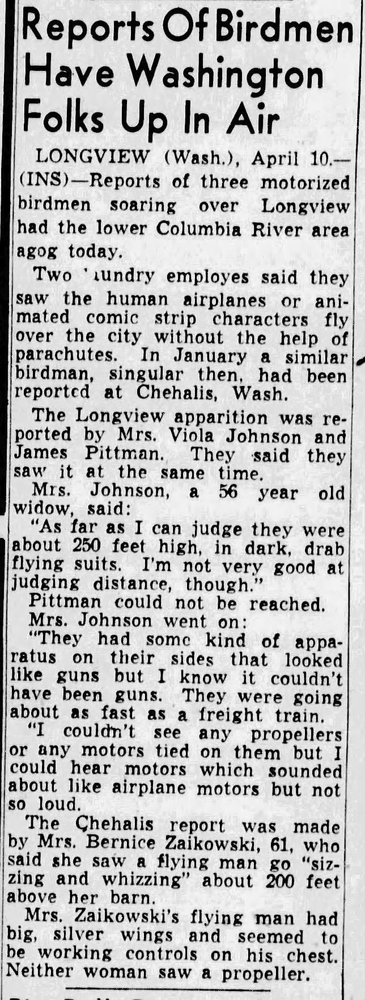
April 10, 1948. Longview, WA Alien seen flying over city.
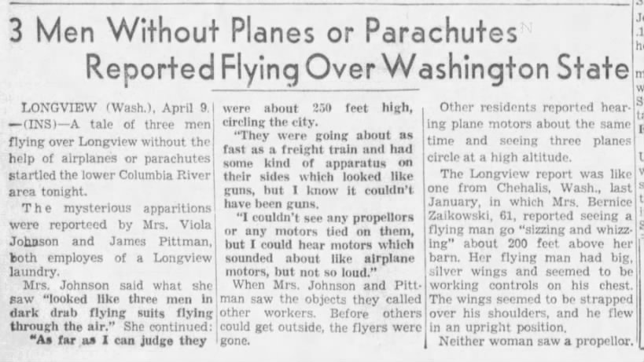
Aliens flying in miniature UFO visiting Longview, Washington residents. 3 Men Without Planes or Parachutes Reported Flying Over Washington State. In Longview, Washington. Mrs. Johnson said 'looked like three men in dark drab flying suits flying through the air. As far as I can judge they were about 250 feet high, circling the city. They were going about as fast as a freight trian and had some kind of appratus on their sides which looked like guns, but I know it couldn't have been guns. I couldn't see any propellers or any motors tied on them, but I could hear motors which sounded about like airplne motors, but not so loud.'
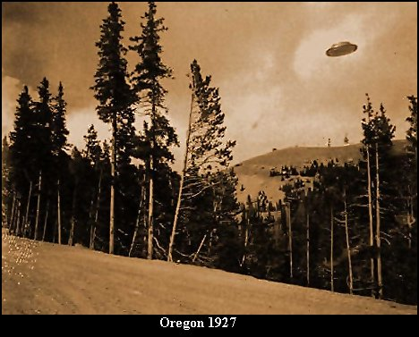
3rd image total. 2nd image description on left. Four times 100 characters at this step. 1927 in Cave Junction, Oregon
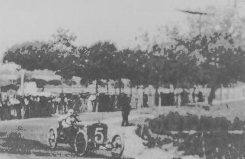
4th image, 2nd on the right. 1910 France UFO. Make it local 2nd image from 1600/500 what ever that could possibly mean. A paragraph defining image goes here. 6 more sentences of 100 characters per line, perhaps more.
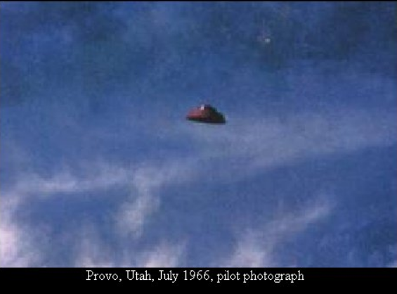
1966 photo by pilot of UFO over Provo, Utah.
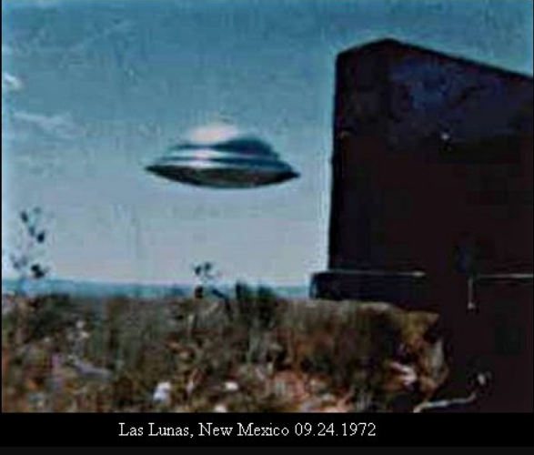
Las Lunas, New Mexico.
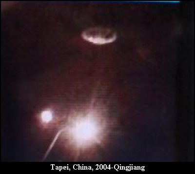
2004. Taipei, Qingjiang, China UFO.
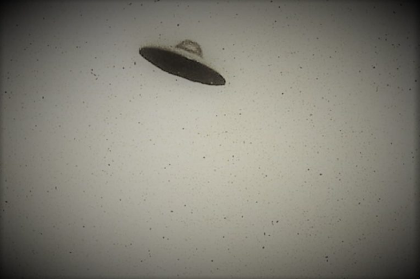
1950 UFO over North America. Exact location unknown.
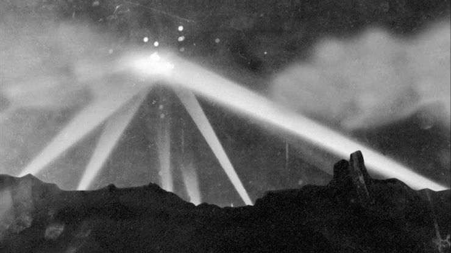
1942 Los Angeles, CA. Called 'Battle of LA'.
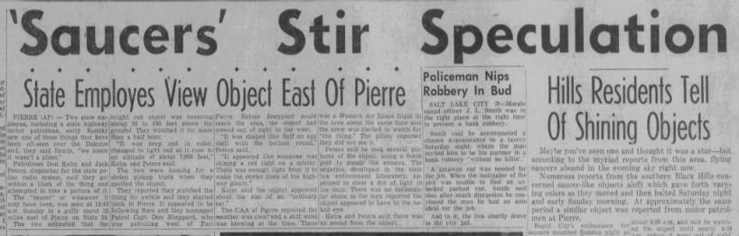
1956 San Francisco, CA. Timeline body. Defining this particular ufo/uap sighting or alien interaction.
1950. McMinneville, Oregon image. 1 of three taken.
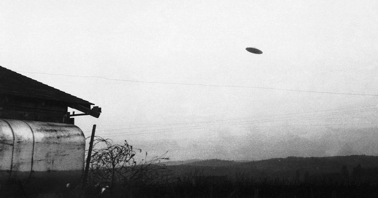
1950 UFO image.